Luigi aka Oreos des Innamorati
RobeMâle · Chocolat tabby point
StatutAdopté
Album12 photos, de décembre 2018 à décembre 2021


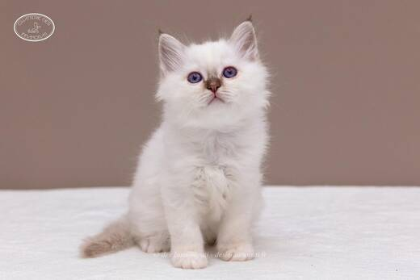

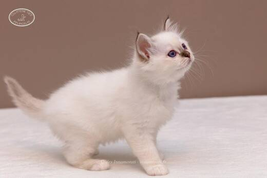

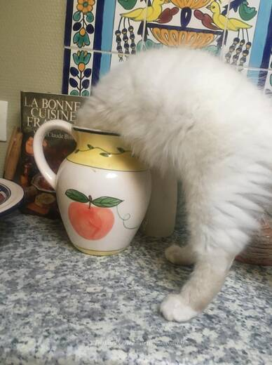

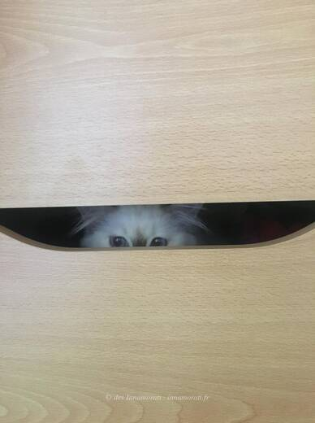

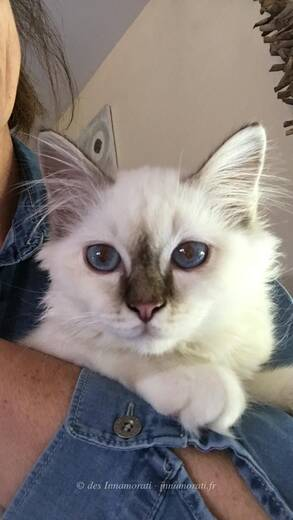

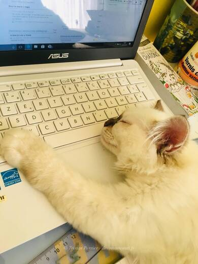

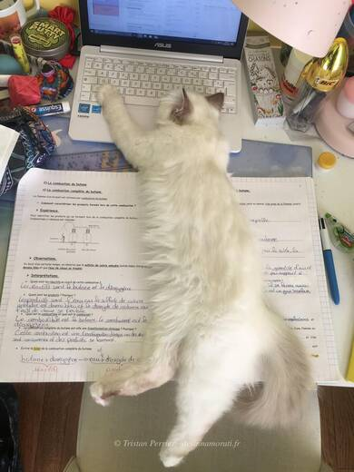

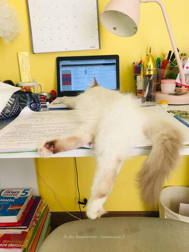

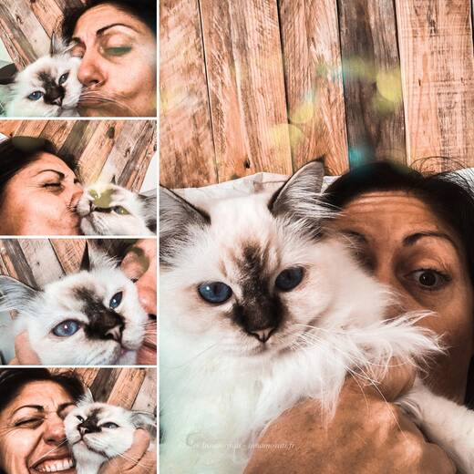

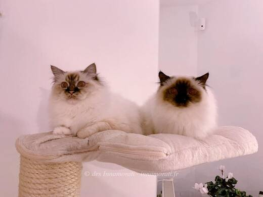

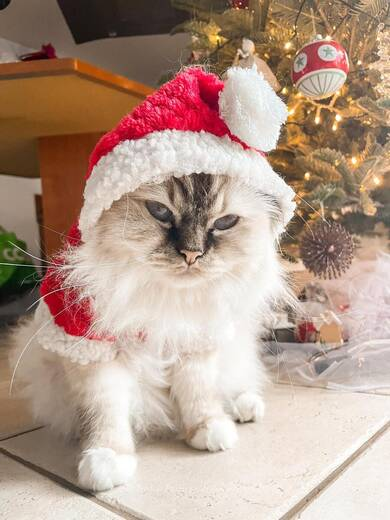
Photos réduites et marquées. Elles appartiennent à la Chatterie des Innamorati et ne peuvent pas être reprises dans une annonce.